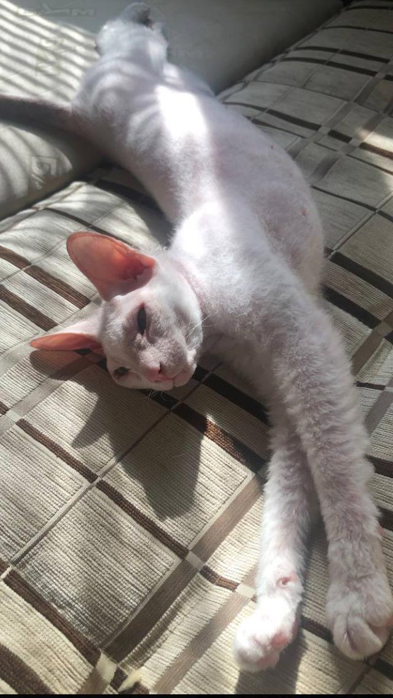

Кошка Плюша

Общая информация
- Порода: донской сфинкс;
- Возраст: 1 год;
- Тип шерсти: велюр;
- Темперамент: активная, добрая, иногда пакостит.
Донской сфинкс – порода бесшерстных кошек из Ростова-на-Дону.
Отличительные особенности: большие уши, теплая на ощупь, складчатая кожа и сильная привязанность к человеку.
Любит:
- Хорошо кушать;
- Громко мяукать;
- Бегать, как шальная;
- Обниматься и мурлыкать;
- Иногда кусаться.
Не любит:
- Когда в миске нет еды;
- Купаться;
- Ходить к врачу.
Информация о других животныx